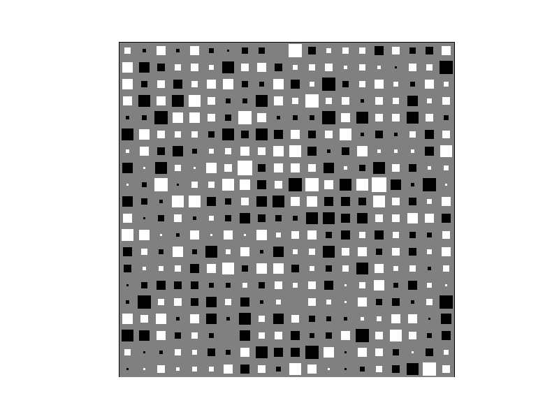

Hinton diagrams are a way of visualizing numerical values in a matrix/vector, popular in the neural networks and machine learning literature. The area occupied by a square is proportional to a value’s magnitude, and the colour (black or white in this case) indicates its sign (positive/negative).
import numpy as N
import pylab as P
def _blob(x,y,area,colour):
"""
Draws a square-shaped blob with the given area (< 1) at
the given coordinates.
"""
hs = N.sqrt(area) / 2
xcorners = N.array([x - hs, x + hs, x + hs, x - hs])
ycorners = N.array([y - hs, y - hs, y + hs, y + hs])
P.fill(xcorners, ycorners, colour, edgecolor=colour)
def hinton(W, maxWeight=None):
"""
Draws a Hinton diagram for visualizing a weight matrix.
Temporarily disables matplotlib interactive mode if it is on,
otherwise this takes forever.
"""
reenable = False
if P.isinteractive():
P.ioff()
P.clf()
height, width = W.shape
if not maxWeight:
maxWeight = 2**N.ceil(N.log(N.max(N.abs(W)))/N.log(2))
P.fill(N.array([0,width,width,0]),N.array([0,0,height,height]),'gray')
P.axis('off')
P.axis('equal')
for x in xrange(width):
for y in xrange(height):
_x = x+1
_y = y+1
w = W[y,x]
if w > 0:
_blob(_x - 0.5, height - _y + 0.5, min(1,w/maxWeight),'white')
elif w < 0:
_blob(_x - 0.5, height - _y + 0.5, min(1,-w/maxWeight),'black')
if reenable:
P.ion()
P.show()